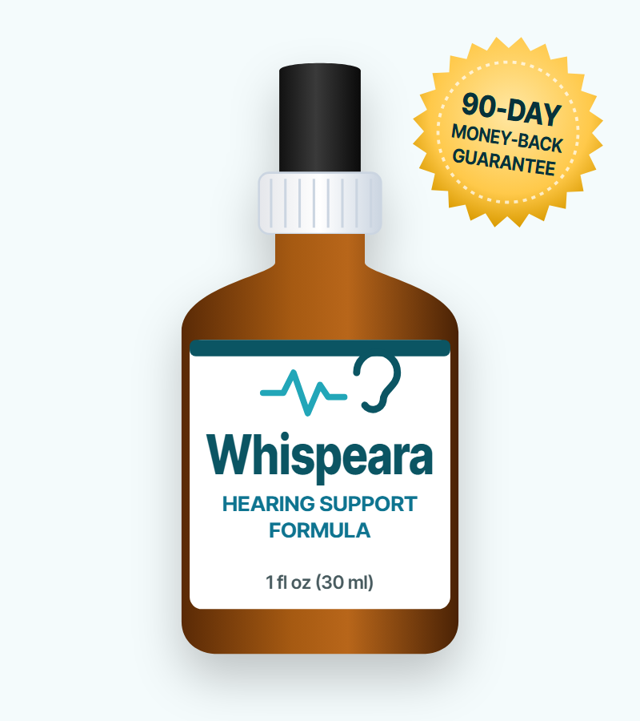
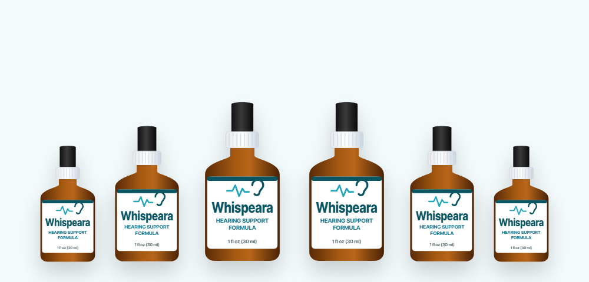

Antioxidant Protection
Grape seed, green tea and other extracts supply antioxidants, which may help protect hair cells in the inner ear from oxidative stress.*
What the Whispeara label really contains, what it can do for your ears, and how to buy Whispeara safely at the best price

Whispeara is a liquid supplement in a 30 ml dropper bottle, sold online as a "hearing support formula" that also promises calm, better mood and energy. Its sales page shows six plant ingredients, but the full label tells a bigger story: a 200 mg blend of more than 20 herbs and amino acids in each 1 ml serving.
In this Whispeara review we go through the complete label, explain what the research does and doesn't show for hearing and tinnitus, cover safety, and lay out the current Whispeara price, discount packages and how to order from the Whispeara official website.
The Whispeara supplement comes as a 1 fl oz (30 ml) amber dropper bottle labeled "Hearing Support Formula." You take one full dropper — about 1 ml — once a day, so a bottle lasts a month. The sales page credits a creator named Mark Thompson, the copyright line reads "Whispeara Research," and checkout is handled by the retailer BuyGoods.
The page focuses on three promises: improved ear health, a better mood and more energy. It highlights six ingredients — maca root, grape seed, green tea, capsicum, gymnema and GABA — and claims a 4.98/5 rating from more than 2,000 reviews, which we can't verify.
The full supplement facts label, shown further down the vendor's page, lists many more ingredients than those six, including guarana, African mango, raspberry ketones and several amino acids. That mix is more typical of energy and weight-management drops than of a targeted hearing formula, and it's the main thing to understand before you buy.
Whispeara is a supplement, not a treatment for hearing loss or tinnitus. It shouldn't replace a hearing test or medical care.
Grape seed, green tea and other extracts supply antioxidants, which may help protect hair cells in the inner ear from oxidative stress.*
The vendor says green tea improves blood flow to the ears; the inner ear depends on a steady blood supply.*
GABA, maca, ginseng and eleuthero are added for relaxation, stress and energy — tinnitus often feels worse when you're stressed or tired.*
These ideas are reasonable on paper, but each depends on dose. Whispeara's whole blend is 200 mg per serving shared between 22 ingredients, so most of them are present at a few milligrams. Clinical studies on the same ingredients usually use hundreds of milligrams — or grams — of a single extract.
The vendor also cites research on tinnitus as the brain's attempt to repair itself, and on hearing loss and dementia. Those studies are real, but none of them tested Whispeara or its formula.
The Whispeara supplement facts label: serving size 1 ml, 30 servings per container. The proprietary blend totals 200 mg.
| Ingredient | What it is | Why it's included |
|---|---|---|
| Chromium (picolinate) — 0.7 mcg | Trace mineral | Blood sugar support (2% of daily value) |
| Maca root extract | Peruvian root | Energy, mood, libido |
| Grape seed extract | Antioxidant (OPCs) | Protects cells from oxidative stress |
| Guarana seed extract | Natural caffeine source | Energy and alertness |
| African mango seed extract | Irvingia gabonensis | Weight-management marketing |
| Eleuthero root extract | "Siberian ginseng" | Stress and stamina |
| Astragalus root extract | Traditional Chinese herb | Immune and antioxidant support |
| Green tea leaf extract | Catechins, some caffeine | Antioxidant, circulation |
| Gymnema leaf extract | Ayurvedic herb | Sugar cravings and blood sugar |
| Coleus forskohlii root extract | Forskolin source | Weight-management marketing |
| Capsicum annuum fruit extract | Chili pepper | Circulation, thermogenesis |
| Grapefruit fruit extract | Citrus extract | Flavor, antioxidants |
| Panax ginseng (aerial) | Asian ginseng | Energy and focus |
| Raspberry ketones | Aroma compound | Weight-management marketing |
| L-glutamine, L-tyrosine, L-arginine, L-ornithine, L-carnitine | Amino acids | Energy, circulation, focus |
| Beta-alanine | Amino acid | Exercise performance |
| Monoammonium glycyrrhizinate | Licorice compound | Sweetness, soothing |
| GABA | Neurotransmitter | Relaxation |
| L-tryptophan | Amino acid | Serotonin and sleep |
Other ingredients: glycerin, water, organic lemon extract, stevia extract 97% (Reb A), xylitol, sodium benzoate, potassium sorbate, citric acid and natural flavors. The label says it is made in an FDA-registered facility.
Two things stand out. First, the dose: 200 mg divided between 22 ingredients works out to roughly 9 mg each on average, and the label doesn't say how much of each is used. Second, the mix: guarana, African mango, coleus forskohlii and raspberry ketones are classic fat-burner ingredients, and they have no connection to hearing. Well-known hearing nutrients such as magnesium, zinc, folate, vitamin B12 or ginkgo aren't on the label at all.
Our take: the Whispeara label looks like a general energy and wellness drop with a hearing-focused name and marketing. The six ingredients promoted on the sales page are a small part of a long list.
| Ingredient | Typical studied dose | Evidence for hearing or tinnitus |
|---|---|---|
| Grape seed extract | 100–300 mg | Protected hair cells in animal noise and drug-damage studies; no human tinnitus trials |
| Green tea (EGCG) | 250–500 mg | Animal studies on drug-induced hearing damage; no human trials |
| GABA (oral) | 100–750 mg | Linked to tinnitus in brain research, but oral GABA barely reaches the brain |
| Panax ginseng | 1–3 g | Small animal studies; one small trial in people with tinnitus, low quality |
| Maca | 1.5–3 g | Mood and libido studies; nothing on hearing |
| Capsicum | 2–6 mg capsaicinoids | No hearing evidence |
| Gymnema | 400–600 mg | Blood sugar studies; nothing on hearing |
The honest summary is that no ingredient in Whispeara has reliable human evidence for reducing tinnitus or improving hearing. Antioxidants protecting the inner ear in lab animals is a genuine research topic — but those studies use concentrated single extracts, often injected, at doses far above what a few drops contain.
The large-review picture for tinnitus supplements in general is also discouraging: reviews of ginkgo, zinc, melatonin and other popular supplements have found little or no benefit over placebo for most people. Where supplements help, it's usually because someone was deficient in a nutrient such as vitamin B12 or zinc to begin with.
The testimonials on the sales page ("Whispeara did wonders to support my hearing") can't be verified and are not typical-results data.
Tinnitus — hearing ringing, buzzing or hissing that has no outside source — affects roughly one in ten adults. Most of the time it's linked to hearing loss from age or noise, and the brain "turns up the volume" to compensate for the missing input. That's why treatments that address hearing and how the brain reacts to the sound work better than pills.
An audiologist can tell you whether you have hearing loss. Many people with tinnitus do, and hearing aids often make the ringing less noticeable because the brain receives more real sound.
Low background sound — a fan, nature sounds, a sound generator or a hearing aid with a tinnitus program — makes the ringing stand out less, especially at night.
CBT has the strongest evidence of any tinnitus treatment for reducing distress. It doesn't remove the sound, but it changes how much it bothers you.
Use earplugs at concerts, with power tools and around loud machinery, and keep headphone volume below about 60% of maximum.
High-dose aspirin, some antibiotics, diuretics and chemotherapy drugs can cause or worsen tinnitus, and impacted earwax can too. A doctor can check both.
Poor sleep and stress make tinnitus feel louder. This is where Whispeara's calming ingredients are aimed — but proven sleep habits and relaxation techniques do more.
Possible benefits of this formula, with honest expectations.*
Grape seed and green tea provide antioxidants, though in small amounts.*
Guarana, green tea, ginseng and maca can give a mild lift — guarana and green tea contain caffeine.*
GABA and L-tryptophan are added for calm and sleep, at low doses.*
One dropper a day, under the tongue or in a drink — handy if you dislike pills.
If you want to judge it fairly, rate your tinnitus loudness and how much it bothers you on a 0–10 scale for a week before you start, then again every two weeks. That gives you something concrete to compare well inside the 90-day guarantee window.
The Whispeara label uses common supplement ingredients, and the small amounts make serious side effects unlikely for most healthy adults. Still, the long list means more chances of an interaction.
Whispeara is a low-dose energy and wellness drop marketed as hearing support. The label is transparent, but the formula doesn't match the hearing promise: most of the 200 mg blend is made up of energy and weight-management ingredients, and nothing in it has solid evidence for tinnitus.
If ringing in your ears is bothering you, a hearing test, sound therapy and CBT are better first steps. If you still want to try Whispeara, buy it from the official website, track your symptoms, and use the 90-day money-back guarantee if you don't notice a difference.
Visit the Whispeara Official Website| Option | What it does | Typical cost | Evidence for tinnitus |
|---|---|---|---|
| Whispeara | Low-dose herbal and amino acid drops | $49–$79 a month | None published |
| Hearing test + hearing aids | Restores missing sound input | Test often covered; OTC aids from a few hundred dollars | Good for people with hearing loss |
| Sound therapy | Masks or blends in the ringing | Free apps to $100+ | Helpful for many people |
| CBT for tinnitus | Reduces distress and improves coping | Varies; online programs available | Strongest evidence |
| Ginkgo or zinc supplements | Single-ingredient supplements | $5–$20 a month | Mostly no benefit over placebo |
A general doctor can check for earwax, infection and medication causes, and refer you to an audiologist or ENT specialist if needed.
Search for the Whispeara official website and you'll find look-alike pages — such as whispeara.mediprime.org — plus marketplace listings using the Whispeara name. To get the real product and the guarantee:
Each Whispeara bottle is a 30-day supply, covered by the 90-day money-back guarantee.
60-Day Supply · Try Two
$79/bottle
No bonuses
180-Day Supply
$49/bottle
+ free bonus e-books
90-Day Supply · Most Popular
$59/bottle
+ free bonus e-books
Prices checked on the official order page on October 18, 2026 and may change. Bonuses: "The Deep Sleep Activation Protocol" and "The Brainwire Regeneration Blueprint" e-books (the page advertises three bonuses but shows these two). One-time payment.
The Whispeara sale price is built into the bundles rather than offered as a coupon. Here's how the per-bottle cost changes:
The "YOU SAVE $780" figures on the order page compare against a list price of $179 per bottle that we've never seen charged, so the real saving is the difference between the three packages.
Our advice: if you're unsure whether Whispeara will help, a 3-bottle order covers the 90 days that the vendor recommends and still falls inside the money-back guarantee. Be wary of sites promising bigger Whispeara discounts — they may not offer the guarantee.

Every Whispeara order from the official website comes with a 90-day money-back guarantee. According to the order page, you can return the product — even empty bottles — within 90 days of purchase and receive a full refund minus shipping and handling, processed within 48 hours of the return arriving.
Contact support by phone or email before sending anything back, and start the process well before the 90-day deadline.
Try Whispeara Risk-FreeWhispeara is a liquid dietary supplement sold for hearing support, calm and energy. Each 1 ml serving contains 0.7 mcg of chromium and a 200 mg proprietary blend of more than 20 ingredients, including maca, grape seed, guarana, African mango, green tea, gymnema, capsicum, Panax ginseng, raspberry ketones, amino acids and GABA.
There is no published clinical trial on Whispeara, and none of its ingredients has good evidence for reducing tinnitus or improving hearing in people. Some antioxidants protect hearing cells in animal studies, but the amounts in a 200 mg blend split between more than 20 ingredients are small. Treat any benefit as uncertain and use the 90-day guarantee if you notice no change.
Whispeara is sold through the vendor's own order page, with checkout handled by BuyGoods. Look-alike sites such as whispeara.mediprime.org also appear in search results. Buying through the vendor's page gives you the advertised price and the 90-day money-back guarantee.
On the official order page Whispeara costs $79 per bottle for 2 bottles ($158 plus shipping), $59 per bottle for 3 bottles ($177 with free US shipping) and $49 per bottle for 6 bottles ($294 with free US shipping). The 3- and 6-bottle packages include free bonus e-books.
The discount is built into the multi-bottle packages: the price drops from $79 to $59 per bottle for 3 bottles and to $49 per bottle for 6 bottles, with free US shipping on both. We have not seen separate coupon codes on the official page.
The vendor says to take one full dropper (about 1 ml, roughly 15 drops) once a day, either under the tongue or mixed into a glass of water or juice.
The label shows small amounts of common supplement ingredients, but it includes guarana (a caffeine source), coleus forskohlii, a licorice compound, L-tyrosine and L-tryptophan, which can interact with blood pressure, thyroid, antidepressant and other medicines. It also contains xylitol, which is toxic to dogs. Ask your doctor first if you take medication, and avoid it during pregnancy.
Whispeara is a liquid. Each bottle holds 1 fl oz (30 ml), which is 30 one-milliliter servings — a one-month supply.
Listings using the Whispeara name appear on Amazon, but the vendor says to buy only from its official order page to get the genuine product and the 90-day guarantee.
No. The order page says Whispeara is a one-time payment with no future charges.
Whispeara has a 90-day money-back guarantee. You return the bottles, even empty ones, within 90 days of purchase and receive a refund minus shipping and handling.
See a doctor promptly for sudden hearing loss, ringing in one ear only, ringing that pulses with your heartbeat, or tinnitus with dizziness, pain or discharge. Sudden hearing loss is an emergency that is best treated within days.
Get Whispeara for as little as $49 per bottle with free US shipping on the 6-bottle package — with the free bonus e-books and a 90-day money-back guarantee.
Order Whispeara Now